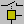
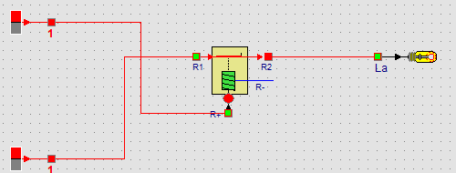

Lamp
LampOutput components show the result of the circuit. They have one or more inputs on the left, to which you connect the wires from the processing part.
An output component has no separate −: it is invisibly connected to ground. See Where are the plus and the minus? If there are power rails on the panel, plug the outputs in on the left of a − rail (ground).
LampLights as long as the input is on.
 Relay
RelayA relay is a switch operated by an electromagnet. On the left is input R to the coil, on the right the changeover contact with the terminals R1 (top) and R2 (bottom).
The relay shows how a small control signal switches a contact. R1 and R2 are only labels on the symbol: you cannot connect a wire to them. To really switch something with the contact, use the switching relay.

Switching relayA relay whose contact you can really use: the coil operates a switch that turns a second circuit on and off, for example a lamp or a buzzer.

| Connection | Meaning |
|---|---|
| R+ (bottom) | coil input: the control signal, for example from a gate |
| R− (right) | other side of the coil, to the − rail (with power rails) |
| R1 (top left) | contact input: connect a switch or another source here, or plug the relay onto a + rail on its left: the contact then gets the voltage of that rail |
| R2 (top right) | contact output: from here you run a wire to a lamp, buzzer, ... |
While the coil is energized (the LED turns red), the contact is closed and R2 passes on the signal and the voltage of R1. When the coil is not energized, R2 is off, whatever is on R1. You start a wire at R2 like at any output: click the block of R2 with the wire button. If a wire already starts there, click the short line with the arrow just before R2.
 Buzzer
BuzzerSounds as long as the input is on. Handy as an alarm.
 7-segment display
7-segment displayThe display has one input. What it shows depends on what you connect to it:
 Voltmeter
VoltmeterThe voltmeter shows the voltage on its +, measured against ground, for example 3.3 V. Connect a wire to the + on the left, or place the meter between a + rail and a − rail. See Power & voltmeter.